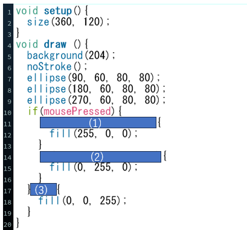

問題のコード
プログラム実行画面
問題文
上図は,左クリックの場合は３つの円が赤,右クリックの場合は緑、クリックされていない場合は青となるプログラムです.
(1)マウスがクリックされた場合に,左クリックと判定するプログラムを埋めてください.
(2)マウスがクリックされた場合に,右クリックと判定するプログラムを埋めてください.
(3)マウスがクリックされていないことを判定するプログラムを埋めてください.
(1)(2)マウスのボタンを判定するためには,mouseButtonを用いる.
解答欄
解説欄